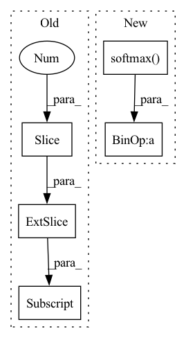

Pattern ID :12456

Before Change
xy = torch.sigmoid(p[..., 0:2]) + grid_xy // x, y
wh = torch.exp(p[..., 2:4]) * anchor_wh // width, height
p_conf = torch.sigmoid(p[..., 4:5]) // Conf
p_cls = p[..., 5:5 + self.nc]
// Broadcasting only supported on first dimension in CoreML. See onnx-coreml/_operators.py
// p_cls = F.softmax(p_cls, 2) * p_conf // SSD-like conf
p_cls = torch.exp(p_cls).permute((2, 1, 0))
p_cls = p_cls / p_cls.sum(0).unsqueeze(0) * p_conf.permute((2, 1, 0)) // F.softmax() equivalent
After Change
xy = torch.sigmoid(p[..., 0:2]) + grid_xy[0] // x, y
wh = torch.exp(p[..., 2:4]) * anchor_wh[0] // width, height
p_conf = torch.sigmoid(p[:, 4:5]) // Conf
p_cls = F.softmax(p[:, 5:85], 1) * p_conf // SSD-like conf
return torch.cat((xy / ngu[0], wh, p_conf, p_cls), 1).t()
// p = p.view(1, -1, 5 + self.nc)
In pattern: SUPERPATTERN
Frequency: 4
Non-data size: 5
Instances
Fragment ID: 42376263
Project Name: nightsnack/yolobile
Commit Name: 636c1cff7a91c0b54c996ef48b36274b08e4a8b8
Time: 2019-08-11
Author: glenn.jocher@ultralytics.com
File Name: models.py
M Class Name: YOLOLayer
N Class Name: YOLOLayer
M Method Name: forward(4)
N Method Name: forward(4)
M Parent Class: nn.Module
N Parent Class: nn.Module
M File Name: models.py
N File Name: models.py
M Start Line: 126
M End Line: 147
N Start Line: 126
N End Line: 135
'>
Before Change
cumulative_probabilities = lax.rev(jnp.cumsum(lax.rev(jax.nn.softmax(sorted_out), (1,)), -1), (1,))
overflow = jnp.greater(cumulative_probabilities, wctx.top_p)
overflow = jnp.concatenate([overflow[:, :, 1:], jnp.zeros_like(overflow[:, :, :1])], -1)
top_p_mask = jnp.take_along_axis(overflow, ranks, axis=2)
out_token = out_token + temp
out_token = out_token + (top_k_mask + top_p_mask) * -1e9
After Change
ranks = jnp.argsort(argsort_out, -1)
top_k_mask = jnp.less(ranks, wctx.ctx.dims.vocab - wctx.top_k) // we want to mask the bottom vocab - k
top_p_mask = get_top_p_mask(jax.nn.softmax(out_token), wctx.top_p)
typical_mask = get_top_p_mask(jax.nn.softmax(out_token) * jax.nn.log_softmax, wctx.mass)
out_token = out_token + temp
out_token = out_token + (top_k_mask + top_p_mask + typical_mask) * -1e9
'>
Fragment ID: 42376274
Project Name: homebrewnlp/homebrewnlp-jax
Commit Name: 98f449eb842384b49ad2820c078c7e4ceef0e014
Time: 2022-05-14
Author: 39779310+ClashLuke@users.noreply.github.com
File Name: inference.py
M Class Name: AnonimousClass
N Class Name: AnonimousClass
M Method Name: body_fn(1)
N Method Name: body_fn(1)
M Parent Class:
N Parent Class:
M File Name: inference.py
N File Name: inference.py
M Start Line: 34
M End Line: 58
N Start Line: 44
N End Line: 65
'>
Before Change
original_mask = sample["original_mask"].cuda().long().cpu().numpy()
output = net(imgs)
binary_pred = torch.sigmoid(output[:, 4:, ...])
damage_preds = torch.sigmoid(output[:, :4, ...]).cpu().numpy()
for i in range(output.shape[0]):
After Change
original_mask = sample["original_mask"].cuda().long().cpu().numpy()
output = net(imgs)
damage_preds = torch.softmax(output, dim=1).cpu().numpy()
for i in range(output.shape[0]):
damage_pred = damage_preds[i]
argmax = np.argmax(damage_pred, axis=0)
cv2.imwrite(os.path.join(preds_dir,
"test_localization_" + sample["img_name"][i] + "_prediction.png"),
mask.cpu().numpy()[i, 4])
cv2.imwrite(os.path.join(preds_dir, "test_damage_" + sample["img_name"][i] + "_prediction.png"),
argmax)
cv2.imwrite(os.path.join(targs_dir, "test_localization_" + sample["img_name"][i] + "_target.png"),
1 * (argmax > 0))
cv2.imwrite(
os.path.join(targs_dir, "test_damage_" + sample["img_name"][i] + "_target.png"),
original_mask[i])
'>
Fragment ID: 42376270
Project Name: selimsef/xview2_solution
Commit Name: ea1fa7aa3efe68dc18f59453a1f093a0bf27112f
Time: 2020-04-17
Author: selim.sef@gmail.com
File Name: train.py
M Class Name: AnonimousClass
N Class Name: AnonimousClass
M Method Name: validate(3)
N Method Name: validate(3)
M Parent Class:
N Parent Class:
M File Name: train.py
N File Name: train.py
M Start Line: 277
M End Line: 294
N Start Line: 283
N End Line: 295